Mapping Tissue Microstructure#
Biophysical Modelling#
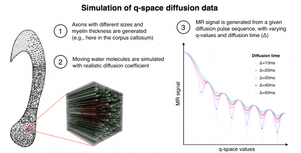
Realistic tissue model for simulating the q-space diffusion MR signal. The tissue model shown on the left was based on real histological data and represents five different fibre calibre distributions for five different regions of the human corpus callosum. Shown is a simulation for one region (zoomed cube including fibres). The simulation software enables us to choose a distribution of axon diameter, density, orientation and myelin thickness. Here we set realistic values from histology. The right panel shows a simulated MR signal given a set of q-space acquisition parameters, e.g., the diffusion time (Δ) and the maximum gradient strength (Gmax).

Above is an example of the application of biophysical models to characterizing white microstructure: the first mapping of axon diameter distributions in the human spinal cord in vivo. The scanning was performed using the 300 mT/m Connectome gradient system
Duval T, McNab JA, Setsompop K, Witzel T, Schneider T, Huang SY, Keil B, Klawiter EC, Wald LL, and Cohen-Adad J, In vivo estimation of axon diameter in the human spinal cord using 300 mT/m gradients. Proceedings of the 22th Annual Meeting of ISMRM, Milan, Italy, 2014: p. 5005.

Adding a myelin metric to the above data, and assuming a white matter model, it is possible to generate images with information on a scale that is orders of magnitude smaller than the native MR resolution. We call the images above ‘simulated electron micrographs’.
Stikov N, Perry LM, Ryklevskaya E, Mezer A, Wandell BA, Pauly JM, Dougherty RF. Bound Pool Fractions Complement Diffusion Measures in Characterizing White Matter Micro and Macrostructure. Neuroimage 2011; 54(2): 1112-1121.
In Vivo Measurement of Myelin G-Ratio#

The myelin g-ratio (defined as the ratio of the inner to the outer diameter of the myelin sheath) is a fundamental microstructural property of white matter that enables fast conduction of information. Variations in the g-ratio have been reported in histological studies of brain development and disease, but measuring it non-invasively in a living human being is a major challenge. Above is a white matter model that helps us define and compute the myelin g-ratio. This model allows us to extract microstructural information on a scale much smaller than the native MRI resolution. It assumes uniformity across the voxel of interest (much like the rest of quantitative MRI), and defines aggregate measures of the axon volume fraction, myelin volume fraction, fiber volume fraction, and the g-ratio.

Using quantitative magnetization transfer (qMT) as a biomarker for MVF, and neurite orientation dispersion and density imaging (NODDI) as a biomarker for AVF, we can compute whole-brain maps of the AVF, MVF and the myelin g-ratio.
Stikov N*, Campbell JSW*, Stroh T, Lavelée M, Frey S, Novek J, Nuara S, Ho M, Bedell BJ, Dougherty RF, Leppert IR, Boudreau M, Narayanan S, Picard P, Duval T, Cohen-Adad J, Gasecka A, Côté D, Pike GB. In vivo histology of the myelin g-ratio with magnetic resonance imaging. Neuroimage 2015; (in press) *These authors contributed equally to this work
White Matter Microstructure in Multiple Sclerosis#
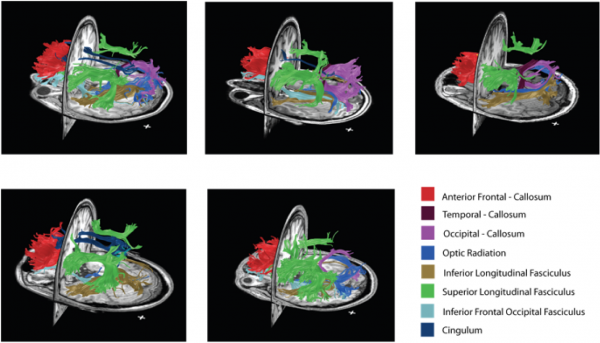
By combining myelin and diffusion imaging, we can perform magnetic resonance tractometry and detect the level of myelination along white matter fibers. Above is an illustration of the fibers with the highest bound pool fraction (myelin surrogate) in five healthy volunteers.
Stikov N, Perry LM, Ryklevskaya E, Mezer A, Wandell BA, Pauly JM, Dougherty RF. Bound Pool Fractions Complement Diffusion Measures in Characterizing White Matter Micro and Macrostructure. Neuroimage 2011; 54(2): 1112-1121

Above is a tractometry analysis in a cohort of MS patients, compared against healthy controls. On average, MS patients have lower magnetization transfer ratio (myelin surrogate) along tracts, which is consistent with lower myelin content in normal appearing white matter. However, the high MTR fibers (90th percentile and above) seem to be comparable in MS patients and in controls, suggesting that some normal appearing white matter may, in fact, be healthy.
Stikov N, Giorgio A, Campbell JSQ, Mazerolle E, Narayanan S, De Stefano N, Pike GB. A Region of Interest Approach to Multiple Sclerosis Tractometry. In: Proceedings of the ISMRM White Matter Study Group Workshop on Multiple Sclerosis as a Whole-brain Disease, London 201
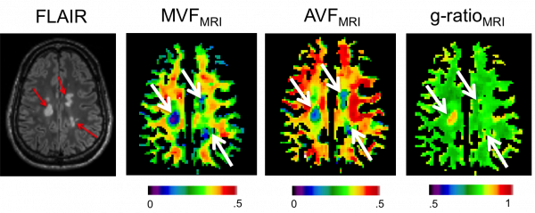
In addition to tractometry analysis, combining diffusion and myelin imaging allows a voxelwise computation of the aggregate g-ratio, a measure of the relative myelin thickness. Above is an image showing lower fiber and myelin content in MS lesions (arrows), but the g-ratio is elevated only in the most recent lesion.
Stikov N*, Campbell JSW*, Stroh T, Lavelée M, Frey S, Novek J, Nuara S, Ho M, Bedell BJ, Dougherty RF, Leppert IR, Boudreau M, Narayanan S, Picard P, Duval T, Cohen-Adad J, Gasecka A, Côté D, Pike GB. In vivo histology of the myelin g-ratio with magnetic resonance imaging. Neuroimage 2015; (in press) *These authors contributed equally to this work
Ex Vivo Imaging of Spinal Cord Injury#
Validation Using Histology#

Model of spinal cord injury. The left panel shows the MRI performed in vivo after the injury. The middle and right panel respectively show the injury during dissection and after histology. The top histology slice shows that the injury spans the dorsal left segment, affecting both the dorsal column (sensory) and the corticospinal tract (ascending). The bottom histology slice shows uninjured tissue. V=Ventral, D=Dorsal, L=Left, R=Right

Custom-made transmit-receive solenoid coil with the cat spinal cord sample and the installation on the 7T MR system equipped with 600 mT/m insert gradients (Varian/Agilent)
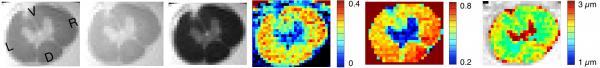
Quantitative magnetization transfer and q-space diffusion imaging to quantity axon features (density, diameter, myelination)

Electron microscopy imaging of axons to validate MRI measures.
Histological Validation of Quantitative MRI#

The table above shows mean values (± standard deviation) of the axon volume fraction (AVF), myelin volume fraction (MVF), and g-ratio in a mid-sagittal slice of the corpus callosum (CC) of a cynomolgus macaque. The values in the top half of the table are obtained from MRI and the electron microscopy (EM) validation is on the bottom. In the middle of the table are segmented EM images (myelin in red and axon in blue) taken from each of the eight CC segments.
Stikov N*, Campbell JSW*, Stroh T, Lavelée M, Frey S, Novek J, Nuara S, Ho M, Bedell BJ, Dougherty RF, Leppert IR, Boudreau M, Narayanan S, Picard P, Duval T, Cohen-Adad J, Gasecka A, Côté D, Pike GB. In vivo histology of the myelin g-ratio with magnetic resonance imaging. Neuroimage 2015; (in press) *These authors contributed equally to this work

The biggest challenge for the experiment above was the small spatial coverage provided by the EM. To provide histological coverage that matches the scale of the MR images, we have recently imaged brain tissue using Coherent Anti-Stokes Raman Scattering (CARS). Image courtesy of Daniel Côté.
Mapping Myeloarchitecture using T2* and Magnetization Transfer#
Data Acquisition#
7T MRI at the Harvard Martinos Center for Biomedical Imaging (Boston)

Example of data:
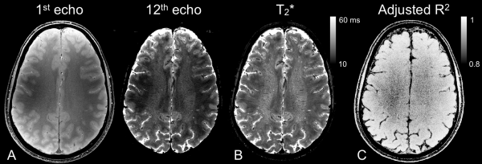
Data Processing#
Correct artifacts and process T2*:
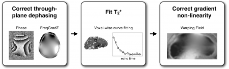
Use FreeSurfer to reconstruct the surface:
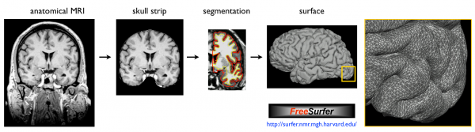
Map T2* values into the cortex of each individual and register to human surface template:
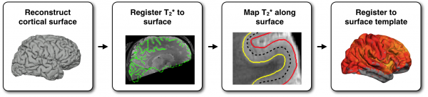
Use Multimodal Information to Study Neuronal Architecture#
Reproducibility of T2* mapping and distribution across Brodmann areas:
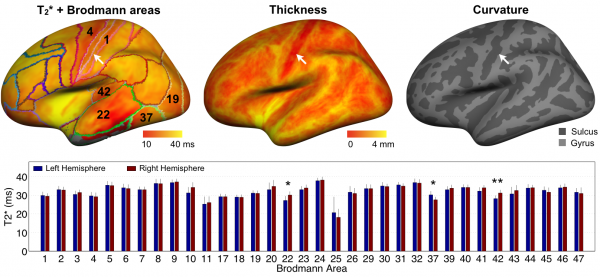
Multimodal mapping:
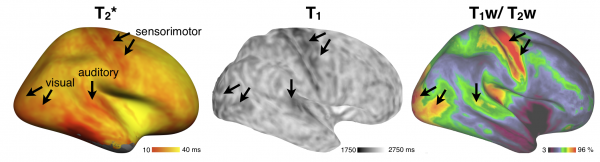
Study the Effect of Tissue Orientation With Respect to B0#
Map the orientation of the cortical surface with respect to B0:

Results show an orientation dependence only in regions with high degree of myelination!
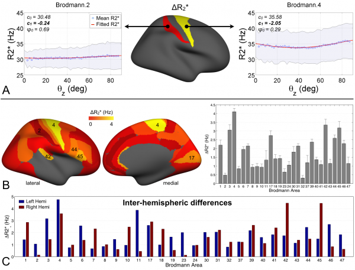
References#
Cohen-Adad J. What can we learn from T2* maps of the cortex? Neuroimage 2013. http://dx.doi.org/10.1016/j.neuroimage.2013.01.023
Cohen-Adad J, Polimeni JR, Helmer KG, Benner T, McNab JA, Wald LL, Rosen B, Mainero C. T2* mapping and B0 orientation-dependence at 7T reveal cyto- and myeloarchitecture organization of the human cortex. Neuroimage 2012;DOI: 10.1016/j.neuroimage.2012.01.053. PDF